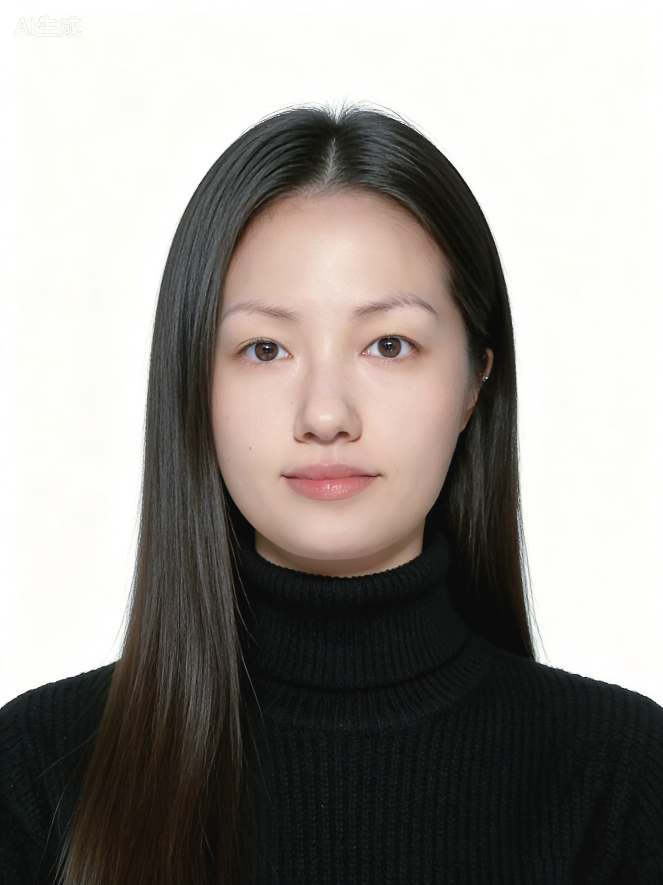

Hello, I'm
Yangwan.

Interaction Designer
我是一名拥有"软件工程 + 信息艺术设计"复合背景的跨领域设计师，硕士期间专注于探索科普交互设计及新媒体艺术方向，曾参与中国古诗词新媒体艺术系列展览的展陈设计、沉浸式中国藻井数字艺术展视觉设计等大型展览的设计制作。
由于理工科背景我具备较强的逻辑思维能力，擅长借助AI工具推动设计项目代码落地，并在复杂系统中平衡用户体验与技术可行性。我坚持聚焦于解决现实问题，在过往的交互装置设计与多媒体沉浸式项目磨砺中，我的跨端系统架构能力与多方协同能力得到了提升。
我希望以"技术可落地、设计有温度"的方式在跨学科融合中创造兼具创新性与实用性的作品，同时持续探索AI能力与设计流程的耦合程度，持续在跨界实践中创造真实价值。
创意与引擎
硬件技术
设计工具
参与穹天玉宇·沉浸式中国藻井数字艺术展，负责展览整体视觉设计、Logo及品牌形象塑造；参与天生我材·李白——中国古诗词新媒体艺术系列展，负责展陈设计、视觉统筹及宣传物料设计；参与国家大剧院数字艺术展，负责多媒体视觉设计与整体视觉统筹；参与一蓑烟雨·苏轼展，负责展览主视觉创意设计。
参与2025年央视春晚节目《栋梁》视觉设计，负责舞台多媒体影像设计及栏目视觉效果呈现；参与清华美院信息艺术设计系20周年系庆展览，负责人机交互界面设计，以及基于多媒体手势互动的创新界面设计与落地。
曾参与芥子须弥·开化——高平开化寺宋代建筑与壁画数字艺术展，负责宋代壁画人物的数字化提取与复原，以及动态交互效果的设计与制作。